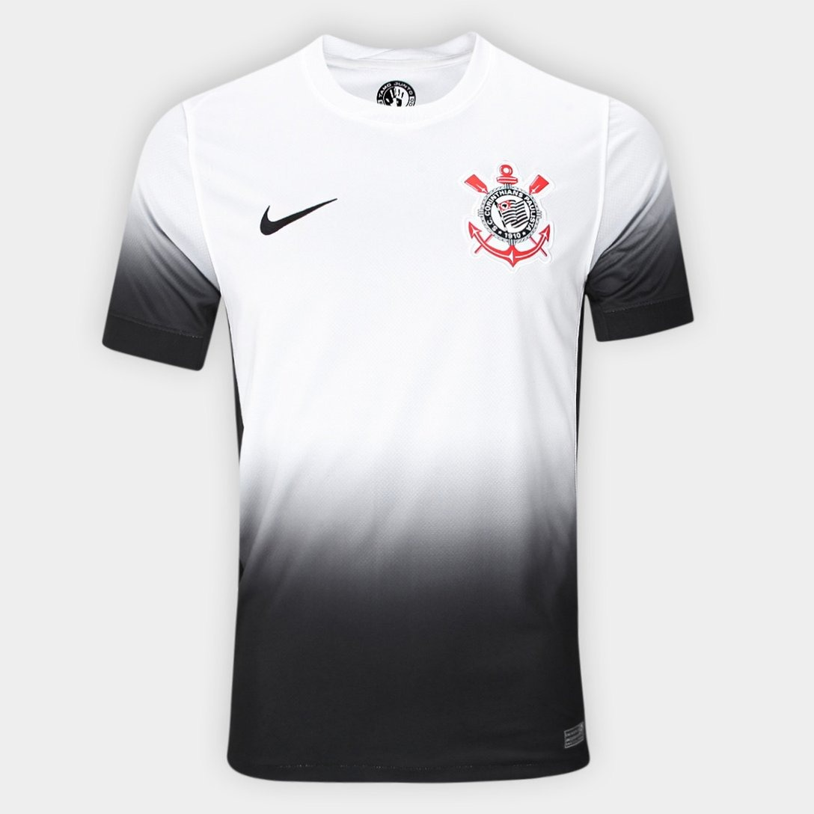

Camisa Corinthians I 24/25 s/n° Torcedor Nike Masculina

Camisa Corinthians I 24/25 s/n° Torcedor Nike Masculina
R$ 314,99 no Pix
ou R$ 349,99 em até
7x
Faça parte da batalha contra o racismo com a Camisa Corinthians I 24/25 s/n° Torcedor Nike Masculina! Pioneiro contra o preconceito racial, o Corinthians e o Observatório da Discriminação Racial no Futebol entram em campo na luta antirracista, promovendo o novo manto para a temporada, que é mais do que uma peça, e sim, um símbolo da busca pela igualdade e combate a segregação. Com emblema do lado esquerdo do peito, essa camisa do Corinthians possui degradê do branco ao preto das mangas até a barra. O interior da gola possui selo com o escrito antirracista “Tamo Junto e Misturado.” Faça parte da história e compre já a sua!
Características do Produto
- Nome: Camisa Corinthians I 24/25 s/n° Torcedor Nike Masculina
- Clube: Corinthians SP
- Gênero: Masculino
- Gola: Gola Careca
- Material: Poliéster
- Manga: Manga Curta
- Dimensões Aproximadas: Medidas da Peça (Tamanho M) - Ombro: 45 cm, Tórax: 108 cm, Comprimento: 74 cm
- Marca: Nike